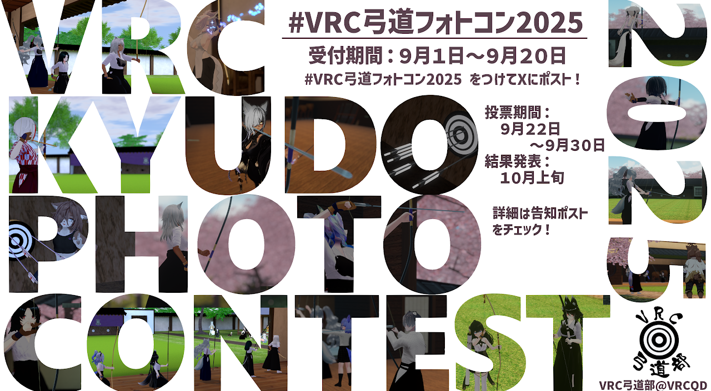

VRC弓道フォトコン2026
#VRC弓道フォトコン2026 をつけて投稿された、VRChat内の弓道に関係する写真を募集します。
メニュー
作品投稿・投票・マイページでは、専用フォームを新しいタブで開きます。Google Apps Script上で動作する公式フォームです。
開催概要
投稿規定: VRChat内で撮影された「弓道」に関係する写真、1人3点まで。
参加方法
- 「作品タイトル」+ #VRC弓道フォトコン2026 をつけてXに投稿
- Xへの投稿後、専用サイトからエントリー登録
Xのポストは「1ポスト1作品」で投稿してください。複数点エントリーする場合は、1枚ずつ分けてポストしてください。
Xへの投稿だけでは投票対象になりません。専用サイトでのエントリー作業が必要です。
各種案内は VRC弓道部(@VRCQD) X公式アカウントより行います。
主催: VRC弓道部(@VRCQD) [部長: 伊予ハブ(@syuutingbe)、副部長: ぷちりゅう(@Puchiryuu_VRC)]
投稿規定
- VRChat内で撮影されたものであり、人物、所作、道具、場面、ワールドなど広義において弓道に関係する写真であること。
- サイズ、縦横比の制限はありません。サイト等に掲載の際は16:9横長を基準とし、それ以外の比率の場合は適宜縮小表示することがあります。
- 画像ファイルの形式はJPG、PNG、WebPで10MB以下にしてください。
- 画像加工は、撮影実態を大きく損なわない範囲で可能です。
- OKな加工の例: 色調調整、トリミング、多重撮影、透過撮影による人物の合成など。
- NGな加工の例: 画像加工によるイラストや文字入れ、コラージュ作品、被写体のAI生成など。
- NSFW不可。
投稿画像の取り扱い
投稿者は、主催者による画像の使用（投票フォームへの転載、弓道に関係する宣伝への利用、関連ワールドへの掲載など）に同意いただきます。主催者は画像使用の際にはクレジット表記を行い、スペースの都合上やむを得ない場合はそれに準じる措置をとるものとします。
参考: VRChatの弓道場一覧
これら以外のワールドで撮影した写真も投稿できます。
あおぞら弓道場 （Aozora Kyudo Hall） Created by ぷちりゅう
ほしぞら弓道場 （Hoshizora Kyudo Hall） Created by ぷちりゅう
VRC弓道場（VRC Kyudo Hall） Created by まってぃ